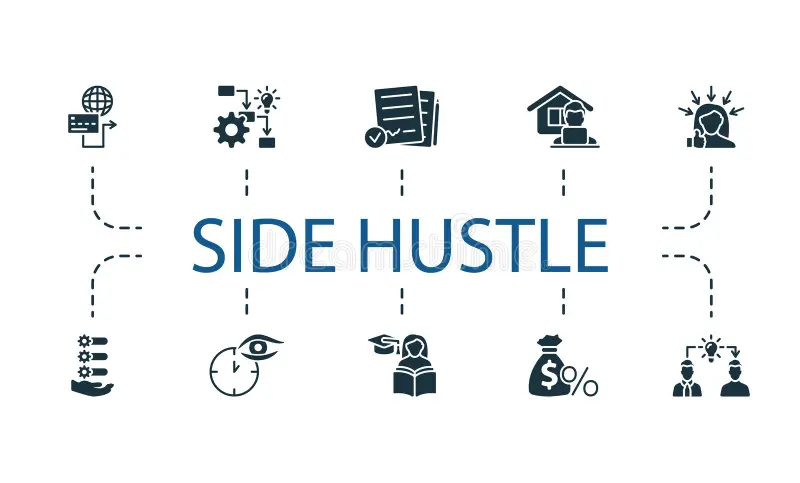

Side Hustles 101
A side hustle is any way of earning extra money outside of your main job or studies. It can include selling products online, freelancing, tutoring, or creating digital content. Side hustles help you build financial independence and develop real-world skills such as creativity, communication, and time management.

In today’s digital economy, opportunities are everywhere. Many successful businesses started as small side projects. The key is consistency, patience, and learning from experience. Even small earnings help you understand how money works in real life.